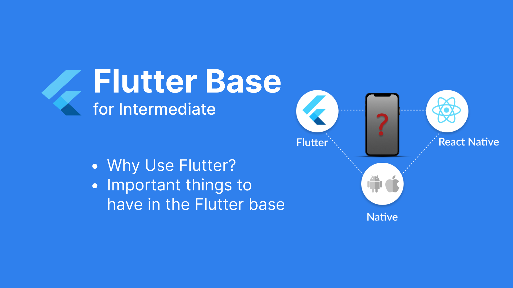

Triển khai Base Flutter - Phần 1: Bối cảnh
I. Chia sẻ bối cảnh
Trải qua nhiều năm làm việc trong mảng lập trình Mobile, nhưng cho tới hiện tại mình cũng chưa có đóng góp được cho cộng đồng điều gì. Giờ cũng là lúc mình học cách viết blog để chia sẻ, tiếp tục học hỏi trau dồi kiến thức, đồng thời cũng giúp mình học thêm khả năng viết lách, trau dồi thêm ngôn từ, từ đó giúp mình dần thay đổi thêm.
Tutorial đầu tay này mình xin chia sẻ quá trình mà mình tự học và viết 1 base Flutter từ cơ bản tới nâng cao như thế nào.
Mình xin vài phút để chia sẻ bối cảnh:
- Ngày trước cty mình xây dựng các ứng dụng hoàn toàn bằng native -> Tốn quá nhiều tài nguyên, nguồn lực để duy trì một team Mobile (gồm cả Android và iOS). Để có thể tối ưu được việc này việc chuyển đổi sang nền tảng khác là điều tất nhiên sẽ xảy ra. Cũng có những câu hỏi xoay quanh về vấn đề hiệu năng, chi phí, con người,... Quyết định cuối cùng chính là Flutter.
- Vậy tại sao lại là Flutter, mà không phải là một phương án khác? Câu hỏi này có hàng tá các bài so sánh các bạn có thể tìm kiếm trên mạng mà ở đây mình xin phép không đề cập cụ thể. Việc lựa chọn phương án nào phụ thuộc vào đường lối công ty, cũng như tính chất của dự án, từ đó có những kỳ vọng khác nhau và đem chúng lên bàn cân.
Sau khi chốt xong phương án sử dụng Flutter, tiếp đến là quá trình tìm hiểu, từ lúc bập bẹ làm quen với ngôn ngữ Dart cho tới khi xây dựng base cho dự án. Áp dụng các kinh nghiệm làm về Native và cả React từ trước, mình dành 1 tới 2 tuần tìm hiểu cơ bản về Flutter sau đó đã bắt tay vào việc tiến hành xây dựng base Flutter.
II. Xác định những thứ quan trọng cần phải có trong base
Đầu tiên là những tìm hiểu cơ bản về Flutter, và xác định những thứ quan trọng cần phải có trong base:
- Suy nghĩ tới việc làm Flutter theo kiến trúc nào?
- Bài toán quản lý state ra sao?
- Một app cơ bản luôn cần phải kết nối tới Backend -> Cần phải xây khung sườn phần này ra sao (auto gen code models, di)? Cấu hình các môi trường để làm khác nhau như SIT -> UAT -> PROD, cấu trúc như nào trên project?
- Điều hướng giữa các màn hình ra sao?
- Project về mobile thì thông thường sẽ có kết nối tới Firebase -> Triển khai như nào? Và làm sao để cấu trúc được firebase ứng với các môi trường?
- Lưu trữ các thông tin bảo mật thế nào?
- Đa ngôn ngữ trong app.
- Làm sao để code sạch, gọn hơn?
Đó là các đầu mục cần thiết để hình thành lên cấu trúc của 1 dự án, và trong series này mình sẽ chia sẻ từng phần để cho các bạn mới có thể bắt đầu, các bạn có nhiều kinh nghiệm có thể tham khảo và cho mình xin thêm ý kiến thì càng tuyệt vời hơn nha.
Trong các bài tiếp theo, chúng ta cùng nhau đi giải quyết từng mục ở trên nhé. Cảm ơn và mong sẽ nhận được sự ủng hộ từ các bạn.